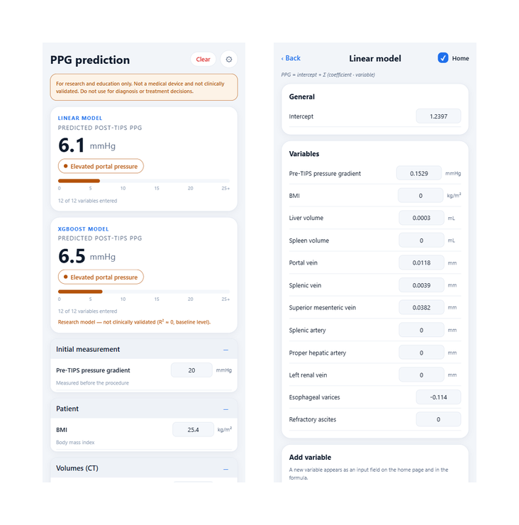
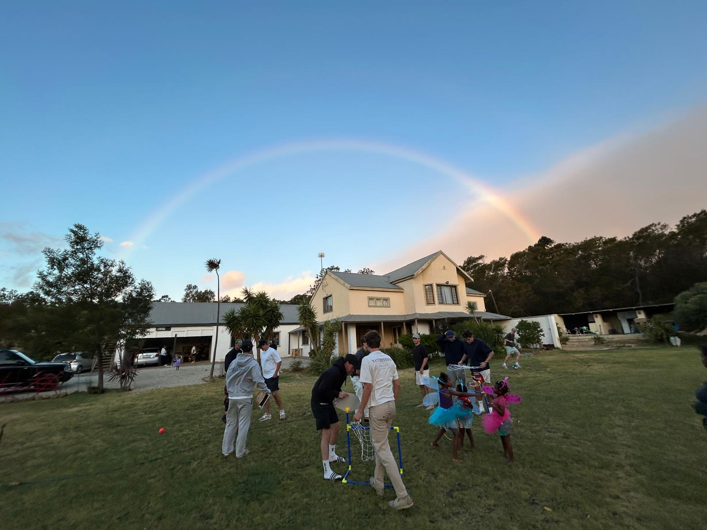
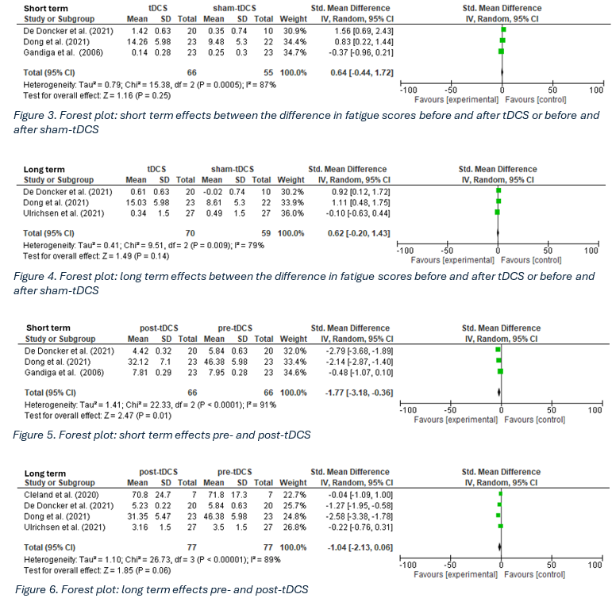
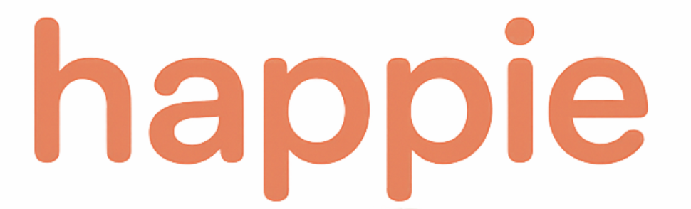
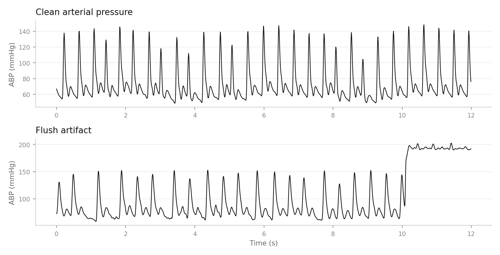
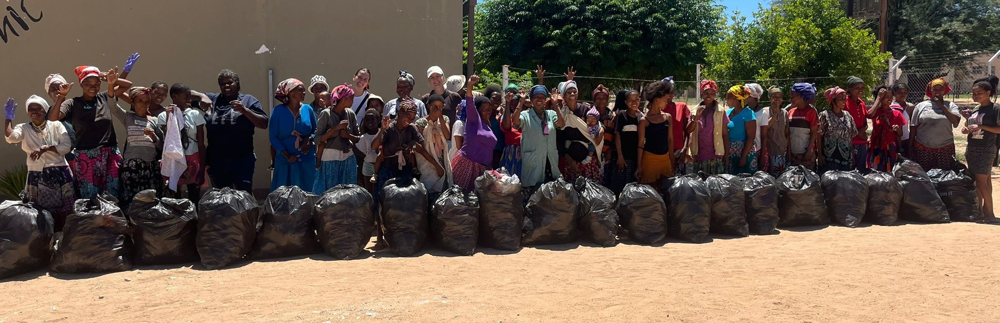

Willem Grasso
Scroll
A closer look at my independent projects and volunteer experiences, with images and the stories behind them.
My education, technical skills, work experience, and a summary of the projects I'm currently working on.
Who I am, where I come from, and what drives my interest in technology, engineering, and humanitarian work.
A closer look at the projects mentioned in my resume, with more details, images, and the stories behind them.

Bachelor research at Erasmus MC predicting portal pressure after a TIPS procedure from CT anatomy, with the app that puts the model in front of the medical team. Every coefficient visible and editable.
View ProjectA voice companion for older adults living with dementia, and the family app that keeps its world true. On TestFlight. I lead the project and the team building it.
View Project
Family led project establishing an orphanage in Gordons Bay, South Africa. Supporting children transitioning off the streets with a farm based kitchen and community workshops.
Learn More
Systematic review and meta analysis of six studies and 211 patients, asking whether transcranial direct current stimulation reduces fatigue after stroke. Against sham stimulation, it does not.
View Project
Meal planning for a house of sixteen, on the App Store and downloaded over 500 times. Includes Corvator, the companion app that keeps the chores from becoming an argument.
View Project
Telling real blood pressure from measurement noise on an intensive care ward, so a nurse is not called to an emergency that is not happening.
View Project
Scalable incentive system exchanging food for collected waste in Epukukiro, Namibia. Sustained removal of 50+ trash bags per collection day, supplying hundreds with food.
Learn MoreMore details about my volunteer work can be found in my resume.